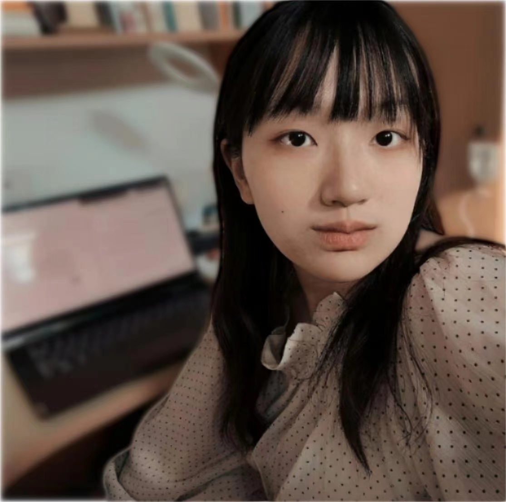

|
Anna Min (闵安娜) Hi! I am an undergraduate at Tsinghua University, who works on multi-modal learning. I am fortunate to work with Prof. Andrew Owens from University of Michigan and Prof. Hang Zhao from Tsinghua University. I am actively applying for a Ph.D. position starting from 2024 Fall! |
 |
{kind=link}
Research
I am broadly interested in creating machine learning models that combine multiple modalities to perceive and engage with the world.
|

|
Crafting Precision in the Wild: Learning Spatial Sound Localization from Unlabelled Egocentric Videos
Anna Min, Ziyang Chen, Hang Zhao, Andrew Owens in submission Explore weak labels based on the direction of source motion for accurate binaural sound localization prediction and introduce the first stereo dataset and benchmark for sound localization in the wild. |
|
|
Fine-grained Emotion Transfer for Speech-to-Speech Translation in Expressive Video Dubbing
Anna Min, Chenxu Hu, Yi Ren, Hang Zhao AAAI24 Workshop on Digital Human, Oral Presentation in submission to NAACL2024 Construct a newly constructed dataset with aligned bilingual audio tracks and use wav to unit translation and unit to wav HiFi-GAN-based networks for transferring pitches and rhythms. |
|
|
When End-to-End is Overkill: Rethinking Cascaded Speech-to-Text Translation
Anna Min, Chenxu Hu, Yi Ren, Xiang Yin, Hang Zhao in submission to COLING2024 Propose a method that leverages two distinct pretrained autoregressive models to enhance a cascaded system and address the challenges associated with error divergence. |
Experience |
|
|
2023.07 ~ Now Visiting Research Intern, Multi-modal Learning Advisor: Prof. Andrew Owens |
|
|
2022.10 ~ Now Research Intern, Multi-modal Learning Advisor: Prof. Hang Zhao |
Awards
|
Miscellanea
I am an amateur illustrator(currently fascinated by generative models though). |
|
Last updated Dec. 2023. Template from Jonathan Barron. |